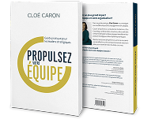

0 1
Le dirigeant devient le goulot
L’organisation fonctionne parce que vous êtes là — pas parce qu’elle est bâtie pour.
25 ans auprès des dirigeants et des comités de direction.
Plus qu'un accompagnement, ce partenariat vous permettra de faire croître votre entreprise au prochain niveau.
Le Fonds de croissance Propulsez votre Inc. accueille un nombre restreint d'entreprises à la fois. Découvrez pourquoi la vôtre devrait en faire partie.
L’organisation fonctionne parce que vous êtes là — pas parce qu’elle est bâtie pour.
Les réunions se multiplient, les décisions attendent une approbation. L’équipe de direction gère le présent pendant que l’avenir attend.
L’organisation s’active sans aller plus vite. On ajoute des gens ; la vitesse, elle, se construit.
Votre vision aligne-t-elle les décisions sans vous ?
Vos décisions ralentissent-elles en grandissant ?
Votre organisation exécute ou coordonne ?
La marge monte-t-elle pendant que la capacité baisse ?
Votre valeur continue-t-elle de croître sans vous ?

Faire du comité de direction une équipe inévitable.
Lever ses propres freins avant ceux de l’organisation.
« Cloé ne laisse personne indifférent.
PAUL LIRETTE — PRÉSIDENT, GSK JAPON
Je peux attester de la puissance de sa méthode. »
Depuis 25 ans, des dirigeants, des visionnaires, des CEO/entrepreneurs comme Paul appellent Cloé pour amener leur entreprise au prochain niveau. Sa méthodologie et son approche vous permettront de traverser les étapes les plus transformatrices, de devenir de vrais leaders de l’économie du Québec.
« Grâce à la démarche One Team réalisée avec Cloé, nous avons pris conscience que nous, les team leaders, formions une équipe à part entière, en développant une vision et des buts communs. Nous sommes agréablement surpris de la solidarité et de la cohésion qui se sont créées. »
« Cloé a une approche très structurée mais également très flexible ; cette structure nous a permis d’avoir des dialogues vraiment pertinents et percutants. Cela nous a permis de progresser en tant qu’équipe, de nous mettre au défi, et de faire front commun en gérant l’organisation. »
« J’occupe des postes de direction depuis plus de vingt ans. Ce que Cloé Caron et son équipe ont accompli est remarquable. Mon équipe est beaucoup plus efficace pour avoir de vraies conversations, se donner du feedback, s’exprimer, être en désaccord pour mieux s’aligner. »
Nous accompagnons un nombre restreint d’entreprises à la fois — l’évaluation, elle,
vous reste.